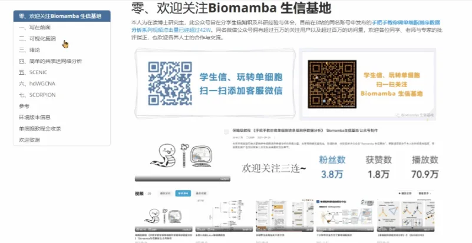
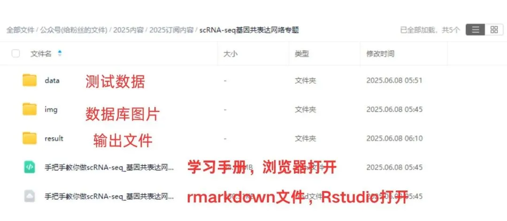

scRNA-seq基因共表达网络分析合辑
原文：https://mp.weixin.qq.com/s?__biz=MzAwMzIzOTk5OQ==&mid=2247530020&idx=2&sn=a41e26954103818eaa409f854f61dcb7&chksm=9b3c0f74ac4b866279339b94c7fb0781a9c17e3691b2ca38e2e1a82fbe755b1b210a2e4051ef#rd 合集：单细胞教程全收录

基因共表达网络分析

 随着单细胞测序技术的发展，发现控制细胞分化和驱动细胞类型转换的 基因调控网络逐渐成为研究热点。这里我们提供了绪论、简单的共表达网络分析、SCENIC、hdWGCNA、SCORPION等章节进行scRNA-Seq的基因共表达网络分析，相信足够大家应对常见的基因调控分析需求。自学教程有困难的同学不妨看看：scRNA-seq，从小白到文献复现大神！更多生信教程可见：生信基地终身订阅须知本教程可视化集锦
随着单细胞测序技术的发展，发现控制细胞分化和驱动细胞类型转换的 基因调控网络逐渐成为研究热点。这里我们提供了绪论、简单的共表达网络分析、SCENIC、hdWGCNA、SCORPION等章节进行scRNA-Seq的基因共表达网络分析，相信足够大家应对常见的基因调控分析需求。自学教程有困难的同学不妨看看：scRNA-seq，从小白到文献复现大神！更多生信教程可见：生信基地终身订阅须知本教程可视化集锦 需要领取/订阅该教程的小伙伴欢迎随时联系微信[ Biomamba_zhushou]
需要领取/订阅该教程的小伙伴欢迎随时联系微信[ Biomamba_zhushou] 本教程基于Linux中的Rstudio环境演示，计算资源不足的同学可参考：
足够支持你完成硕博生涯的生信环境
独享服务器，生信分析不求人
5090终于上架啦 -Biomamba
本教程基于Linux中的Rstudio环境演示，计算资源不足的同学可参考：
足够支持你完成硕博生涯的生信环境
独享服务器，生信分析不求人
5090终于上架啦 -Biomamba

所见即所得
学习手册以html文件格式提供，可在浏览器中打开并翻阅学习：

教程目录 ：
一、写在前面
二、可视化集锦
三、绪论
3.1 研究背景
3.2 主要结果
（1）合成网络数据集
（2）精选模型数据
（3）实验性的单细胞RNA-Seq数据集
3.3 小结
四、简单的共表达网络分析
4.1 加载R包
4.2 计算相关性
五、SCENIC
5.1 软件安装
5.2 加载R包5.3 官方手册5.4 测试数据（1）直接读取loom文件（2）创建loom文件5.5 RcisTarget数据库（1）文件获取（2）RcisTarget数据库文件初始化5.6 分析流程（1）初步设置（2）共表达网络(Co-expression network)计算（3）构建基因调控网络(Gene regulatory network, GRN)（4）runSCENIC_3_scoreCells()分解步骤（5）二元矩阵及可视化（6）对regulon活性进行聚类分群、降维分析5.7 下游探索工作（1）交互式的探索（2）在tSNE中绘制TF的表达水平（3）探究regulon, 靶基因, motif的关系（4）用热图探究细胞与regulon的关系（5）调控网络的绘制
六、hdWGCNA****
6.1 数据准备
（1）加载R包
6.2 数据读入6.3 为 WGCNA 设置 Seurat 对象6.4 创建metacells6.5 构建共表达网络 （1）设置表达矩阵****（2）设置软阈值6.6 可视化（1）模块特征图********（2）雷达图********（3）相关性热图********（4）DotPlot********（5）VlnPlot********（6）网络图********（7）UMAP图********（8）module与表型数据相关性分析********（9）Enrichment analysis 基因集（module）富集分析**** （10）模块之间的差异分析
七、SCORPION********
7.1 安装R包
7.2 加载R包7.3 示例数据展示7.4 小鼠肠上皮单细胞数据（1）安装R包（2）数据准备（3）scorpion分析7.5 人类胚胎干细胞（1）定义QC质控函数（2）导入单细胞数据（3）单细胞数据处理（4）单细胞分群展示（5）8C-like细胞鉴定（6）8C-like和其他亚群差异基因鉴定（7）导入TF和PPT网络（8）scorpion分析7.6 结果可视化和解读（1）导入Hnf4α和Hnf4γ分析结果 （2）Hnf4a密度图****（3）Hnf4a差异值分布********（4）Hnf4g密度图********（5）Hnf4g差异值分布**** （6）Hnf4a线性回归与靶基因富集分析****（7）Hnf4g线性回归与靶基因富集分析********（8）加载DUX4分析结果********（9）转录因子调控分布散点图********（10）DUX4密度图********（11）DUX4差异值分布********（12）DUX4线性回归与靶基因富集分析八、参考九、环境版本信息十、单细胞教程全收录十一、欢迎致谢****
文末下载链接中包含以下内容：

测试文件约12.11GB ，大家注意按需下载！

往期订阅


生信基地现已开放终身订阅，现已包含几十篇订阅资料，未来37年持续更新：那就开放一个终身订阅吧~
2025已更新订阅内容：
《Cell》复现|中性粒细胞scRNA-seq图谱阐明抗肿瘤抗原呈递效力
《Cancer Cell》|时空单细胞揭示CRC的PD-1治疗免疫细胞动态
scRNA-seq数据基础分析手册(2025最新修订)代码复现|吞噬作用增强肿瘤中巨噬细胞的氧化代谢和免疫抑制特征一文学会scRNA Velocity剪切速率分析
一文学会四种scRNA-seq轨迹分析
一文学会四种scRNA-seq细胞通讯分析
一文学会四种基因共表达网络分析
肿瘤异质性分析必备| 一文学会四种scRNA-seq拷贝数变异分析
 解锁前需阅读：2025订阅须知
解锁前需阅读：2025订阅须知
订阅后获取学习手册下载链接：
请联系[Biomamba_zhushou]获取文件提取码
本推送教程链接：
https://pan.baidu.com/s/1CZWFvH06zfpV45B8BldsJA?pwd=2uir
整个2025订阅合集的百度云下载地址可见:
https://pan.baidu.com/s/1yXzQi0zBqh4ZLR6Hznckiw?
-Biomamba

如何联系我们

 留一个领取资料、开箱即用的单细胞分析镜像的微信号[Biomamba_zhushou]，方便各位随时交流。同时我们也构建了交流群矩阵，欢迎大家入群讨论。
大家可以阅读完这几篇之后添加给生信入门初学者的小贴士
没有检索，就没有发言权
留一个领取资料、开箱即用的单细胞分析镜像的微信号[Biomamba_zhushou]，方便各位随时交流。同时我们也构建了交流群矩阵，欢迎大家入群讨论。
大家可以阅读完这几篇之后添加给生信入门初学者的小贴士
没有检索，就没有发言权
已有生信基地联系方式的同学无需重复添加
 您点的每个赞和在看，我都认真当成了喜欢
您点的每个赞和在看，我都认真当成了喜欢